When a house floods, burns, or grows mold, the cleanup crew shows up with a few big, boxy machines, rolls them into the worst rooms, and runs them around the clock. Those machines aren't air purifiers. They're air scrubbers, and they're the reason a damaged house can be livable again in days.
Most people have never heard the term. They've heard "air filter" and "air purifier" and assume all three mean the same thing. They don't. Knowing the difference is how you tell a machine that does something to your air from one that just sits in the corner.
First, the three terms
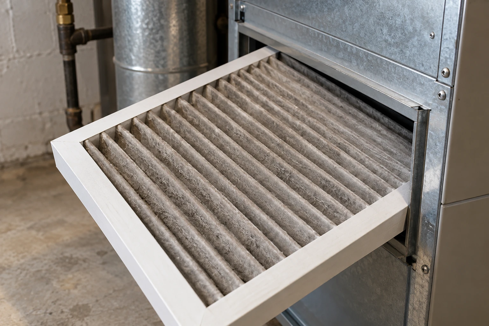
A part, not a machine
The pleated sheet inside your furnace or AC. It catches dust only while your HVAC is running, and only from air that reaches the return vent. When the system shuts off, filtering stops.
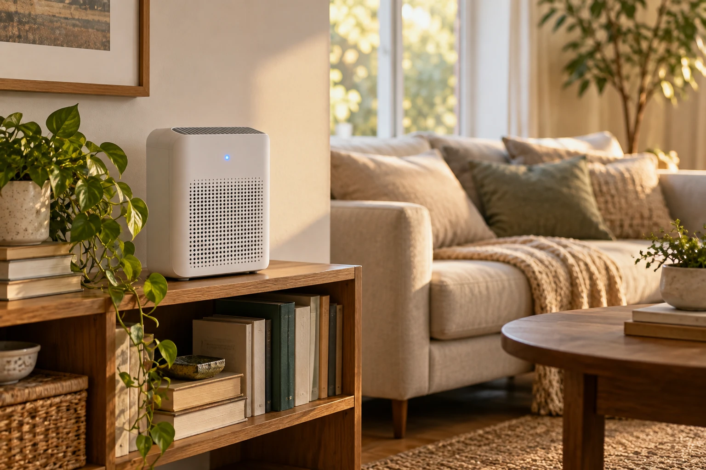
A compromise in a plastic box
A small fan pushing room air through a filter, built to be small, quiet, and cheap. Airflow is what usually gets cut to hit those goals, and a purifier that can't move much air can't clean much air.
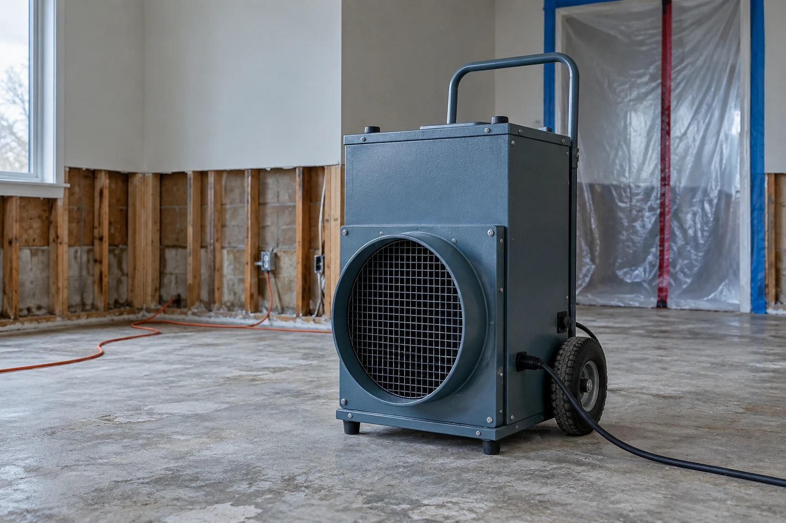
What the professionals use
A machine built to clean the air in a room fast and keep it clean. It comes from the restoration industry, where "pretty good" isn't an option.
Enough to cycle a whole room through its filters several times an hour.
Big particles, fine particles, and gases, each with its own filter stage, including activated carbon.
Metal housings and heavy-duty motors, made to run nonstop for weeks.
Why the scrubber is the one you actually want
Clean air comes down to one question: how many times an hour does the air in your room go through a good filter? Professionals call this air changes per hour. Everything else, from filter grades to fancy features, only counts once you have enough airflow.
Clean air comes down to one number: how many times an hour your room's air passes through a good filter.
Scrubbers are built around that number. That's why remediation crews trust them against the worst indoor air there is. If a machine can clear a damaged room, a bedroom with a dusty closet, a shedding dog, and a gas stove down the hall is well within its range.
So why doesn't everyone have one?
The catch: commercial scrubbers were built for job sites, not homes
Spend five minutes near a commercial air scrubber and you'll understand. It does an excellent job, and you'd never want one in your bedroom.
A popular professional model, the Abatement PAS1200, stands 39 inches tall and weighs 85 pounds. It rides on a dolly because nobody wants to lift it. Sized for gutted basements, not bedrooms.
65 to 80+ decibels, vacuum-cleaner loud, all day and all night. The crew goes home at 5 p.m. You'd be sleeping next to it.
The sticker, $1,000 to $2,500, is close to a Jaspr’s. The filters are where it adds up: one full set for the Dri-Eaz HEPA 500 runs about $263, sold only in multi-packs that cost roughly $760 up front. And no sensors, no auto mode, no homeowner warranty.
What if you didn't have to choose?
You walk into your bedroom at the end of a long day, and the air feels different: light, clean, like the first breath outside after a rainstorm.
Somewhere in the corner, something is cleaning every breath you take. You just can't hear it.
For years you had to pick just one of these.
Not anymore.
- ✓Professional powerThe same kind of air cleaning restoration crews rely on.
- ✓Whisper-quietYou'd have to stop and listen to know it's on.
- ✓Sized for a bedroomSlim enough to tuck beside the nightstand.
- ✓No hassleIt adjusts on its own. A new filter arrives twice a year.
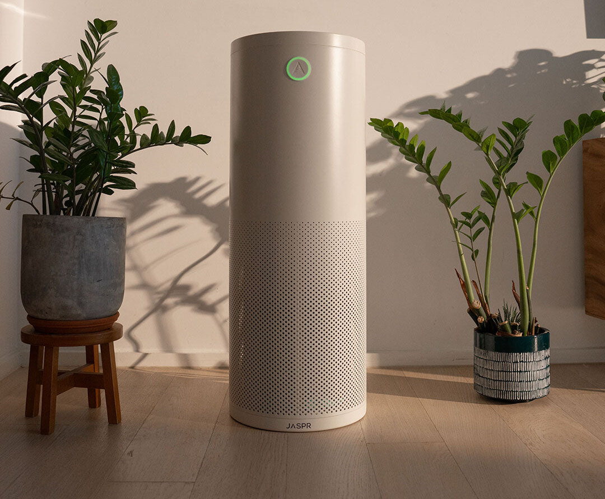
- Indicator lightGlows to show your air quality at a glance. Goes fully dark at night.
- Built-in sensorsPM2.5 and VOC sensors watch fine particles and chemical fumes around the clock.
- Adjusts on its ownSmart mode speeds the fan up when the air changes, then settles back down.
- Quiet, powerful motor33 dB on its everyday setting. Up to 340 CFM when it's needed.
- Clean, minimal designCold-rolled steel, no cheap plastic. Made to look like it belongs in your home.
Live with Jaspr for 30 days. If it’s not for you, we’ll buy it back at full price.
Try Jaspr risk-free“The unit is elegant and quiet. I was happy to see the unit … go into action after I used hair spray in our bathroom … and cleaned the air within minutes.”Erica H., verified buyer
An air scrubber built for the home
That machine exists, and it came from someone who knew exactly what was missing.
Jaspr was created by Michael Feldstein, an air quality and restoration expert who spent years watching commercial scrubbers clean up houses that families couldn't live in. His question was simple: why should people only get air this clean after something goes wrong?
Michael and Rachel Feldstein and their three kids. Jaspr is a family company based in Austin, Texas.Jaspr keeps what makes a scrubber a scrubber: real airflow, dedicated stages for particles and gases, and a steel body built to run constantly. Then it fixes each of the three problems above.
31.5 inches tall. 11.5 inches wide. 25 pounds.
That's less than a third of the PAS1200's weight and about half its width. It stands upright like a floor lamp instead of squatting like a shop vac. The housing is cold-rolled steel, not cheap plastic, and it's finished to sit in a bedroom or living room like it belongs there, because it does.
33 decibels, about a whisper
On its lowest setting, where Jaspr runs about 99% of the time, it measures 33 decibels. Even at full power it tops out at 58 dB, quieter than a normal conversation and far below the 65 to 80+ dB of a job-site unit.
And it goes dark at night, so there are no glowing lights by your bed.
Quiet doesn't mean weak. On that whisper-quiet setting Jaspr still moves 114 CFM.
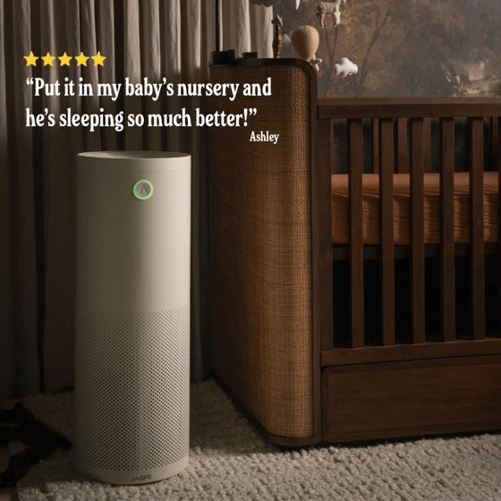
Priced like one commercial unit. Built for living with.
Jaspr costs about what a single commercial unit does, and its price covers things no job-site machine offers:
- Built-in air sensorsFine particles and chemical fumes, watched around the clock. It speeds up on its own, then settles back down.
- One filter, every six monthsMedia filter plus a full pound of activated carbon, delivered automatically. The swap takes about 30 seconds.
- Lifetime warrantyWith the filter subscription, including free shipping both ways.
- 73 watts at full speedAbout what an old incandescent bulb draws.
Every Jaspr comes with a 30-day buy-back and free shipping.
Try Jaspr risk-free“Located in our den, quietly cleans the air continuously. When you enter the house, it smells clean...”Francisco P., verified buyer
Side by side
| Typical air purifier | Commercial scrubber | Jaspr | |
|---|---|---|---|
| Built for | Small rooms, light dust | Mold, fire, and flood jobs | Bedrooms and living spaces |
| Airflow | Often limited to stay quiet | Very high | 114 CFM whisper-quiet, up to 340 CFM (smoke) |
| Odors and VOCs | Thin carbon layer, if any | Separate carbon stage | 1 lb activated carbon, built in |
| Noise | Quiet | 65–80+ dB | 33 dB everyday, 58 dB max |
| Size and weight | Small, light | 44–85 lb, dolly-mounted | 31.5 × 11.5 in, 25 lb |
| Housing | Plastic | Metal | Cold-rolled steel |
| Smart sensors | Sometimes | No | PM2.5 + VOC, automatic |
| Filter upkeep | Varies | 3 stages sold separately, ~$263 a set | One filter every 6 months, $199 delivered |
| Warranty | Usually 1–2 years | Contractor terms | Lifetime, with filter subscription |
Commercial figures from manufacturer and dealer specs for the Abatement PAS1200 and Dri-Eaz HEPA 500. Filter set price from Sylvane retail pack prices (HEPA, carbon, and pre-filter) for the Dri-Eaz HEPA 500. Noise range from industry buyer guides.
What owners notice
In testing, Jaspr removed 97.1% of airborne mold in one hour. At home, owners talk about the everyday moments: burnt toast that clears in minutes, a room that stays quiet, a filter that shows what it caught.
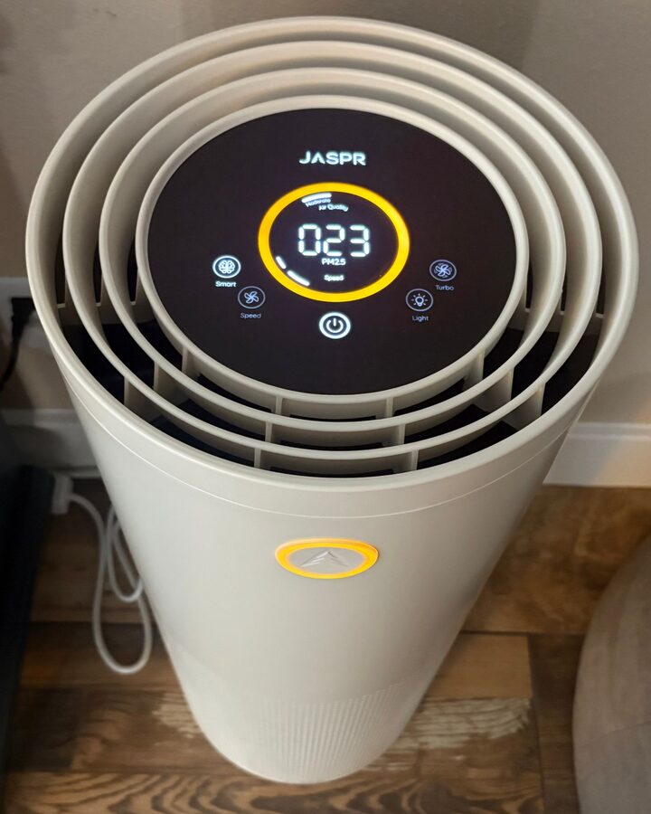
★★★★★Definitely works!
“It normally reads at about a 4, but I recently had food burn in the bottom of the oven & it jumped up to 23! It turned on turbo mode & cleaned the air right away!”
Sara H.Verified buyer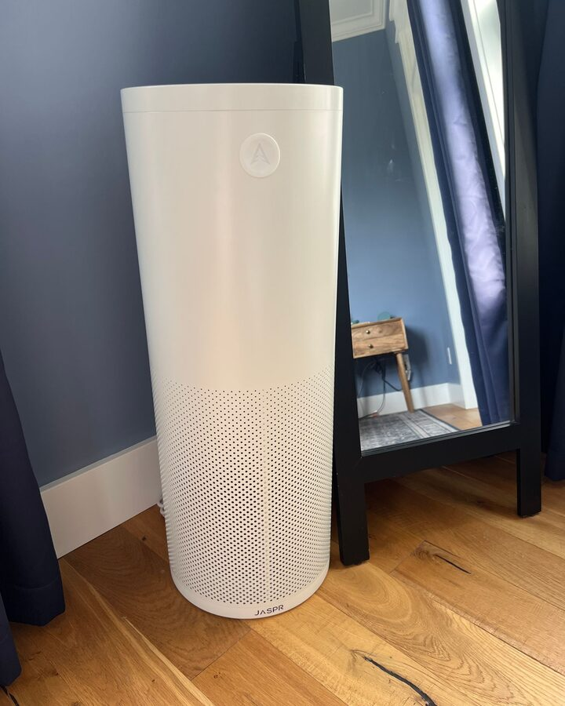
★★★★★Quiet!
“Love the sleek design, the touchscreen that doesn’t require Bluetooth or Wi-Fi, and mostly how quiet it is.”
Lisa S.Verified buyer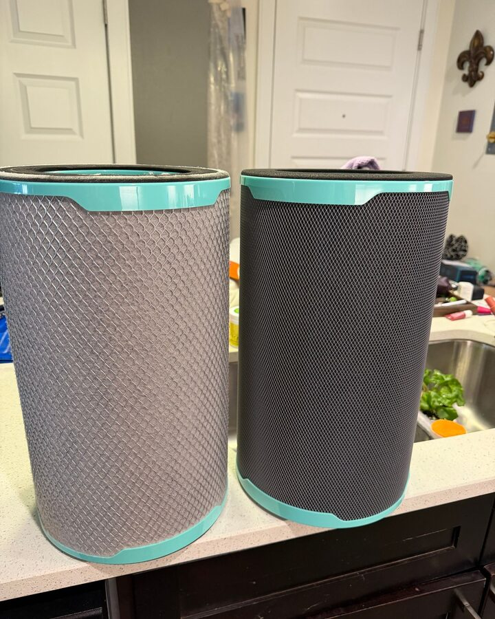
★★★★★Highly effective
“When I spray deodorant in my bathroom it kicks on in high gear. It detects anything and everything. I replaced my filter and cleaned it for the 1st time and couldn’t believe the difference.”
KKVerified buyer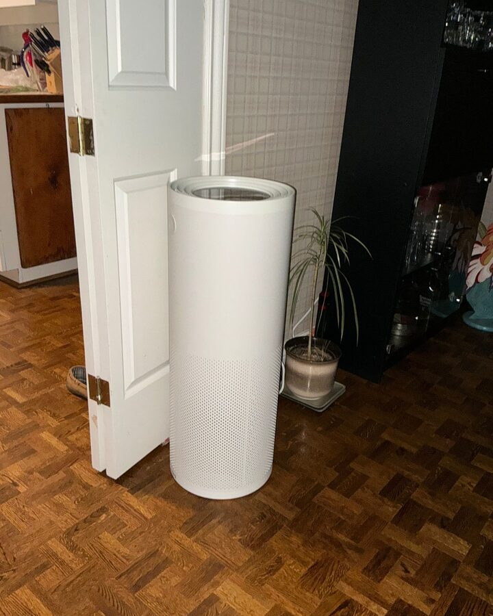
★★★★★I love the look!
“I like the fact that the screen can go black with just one small light on. It has a sturdy feel to it and a nice design and looks good anywhere you place it.”
Barbara A.Verified buyer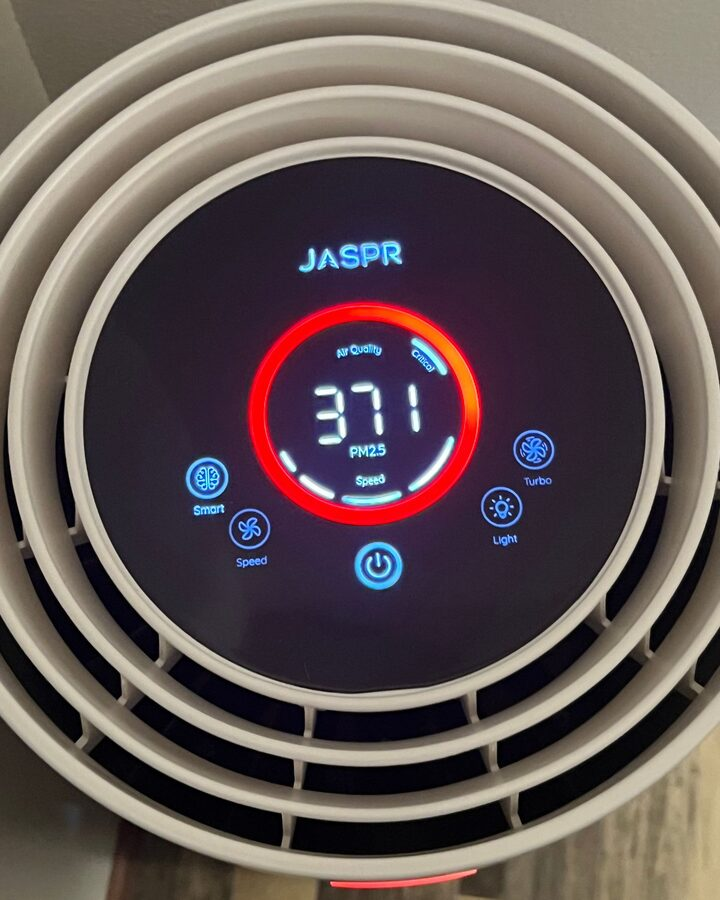
★★★★★Cooking smell
“It takes cooking smells and smoke out of my house a lot faster then opening a few windows. Love it!!”
Jennifer H.Verified buyer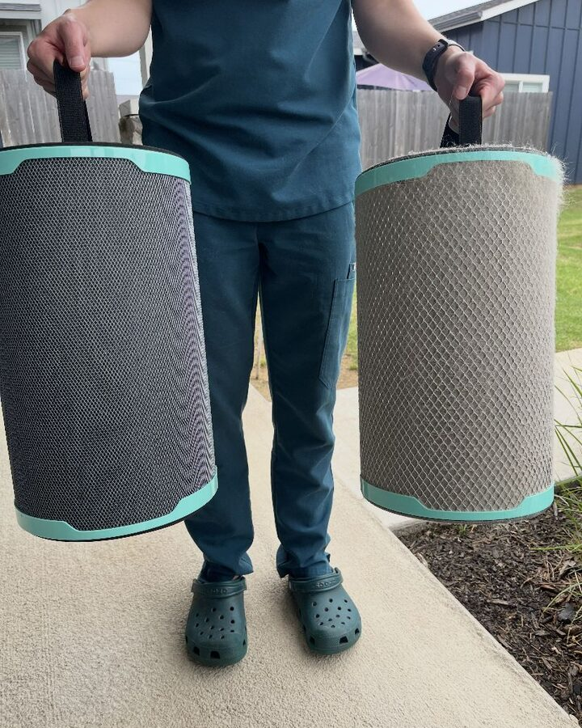
★★★★★Cleaner house
“We have a golden retriever (10/10 good boy, 10/10 shedder). Since purchasing a Jaspr, we’ve noticed significantly less dog hair around the house as well as dust floating around.”
Parker D.Verified buyer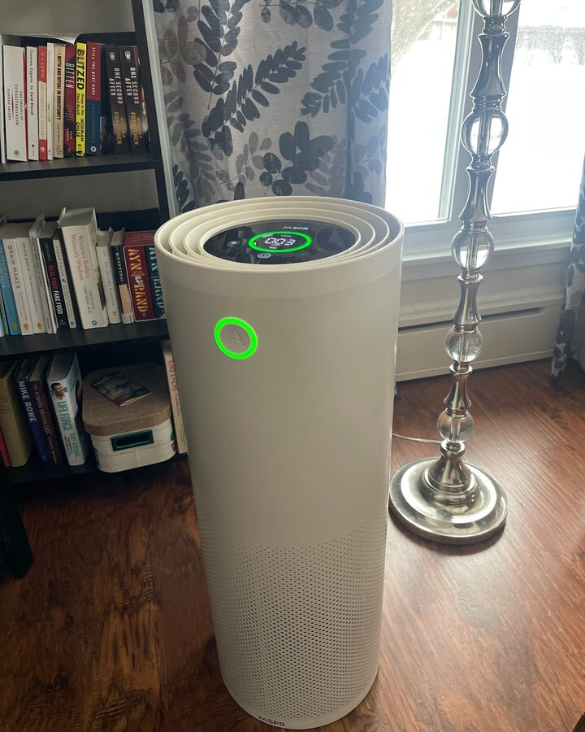
★★★★★Love my indoor fresh air!
“I’m amazed at how well this air scrubber works and how quiet it is at the same time. The night mode is great- I sleep in total darkness.”
Maria Q.Verified buyer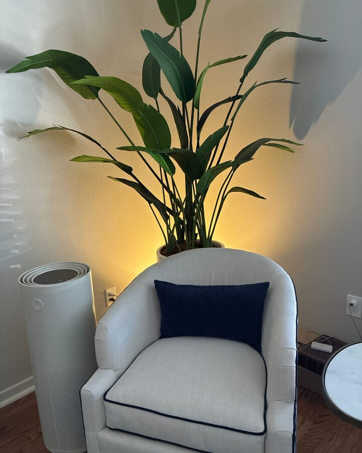
★★★★★My Jaspr
“It looks great in my living room. I don’t mind having it out in clear view. It’s quiet.”
Pegi S.Verified buyer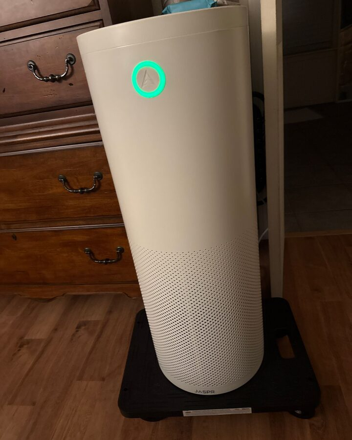
★★★★★Love it!
“I cooked some bacon this morning, and there was a little bit of smoke in the house and the Jaspr ramped up and cleared the air quickly.”
Tamara H.Verified buyer
The bottom line
An air filter is a part. An air purifier is a compromise. An air scrubber is the real thing, and until recently the real thing only came in a size, volume, and format built for a job site.
Jaspr is the air scrubber professionals trust, rebuilt to live in your home.
You've got to breathe it to believe it
Live with Jaspr for 30 days. If your home doesn't feel noticeably better, we'll buy it back for the full price you paid.
Try Jaspr risk-free“Noticeably cleaner great smelling air throughout the house. I bought a fifth one for my daughter and her house, they love it too!!”Vanessa C., verified buyer